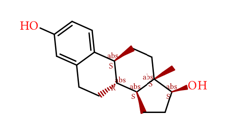
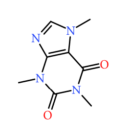
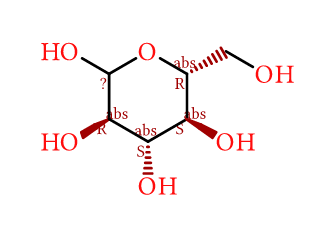

QUÍMICA ESTRUTURAL 2D
Motores openchemlib & openbabel — Estruturas Químicas 2D
O Joaju integra suporte nativo para produção de estruturas moleculares 2D em SVG vetorial de alta definição para laudos farmacológicos, artigos e relatórios biomédicos:
openchemlib: Motor JavaScript ultrarrápido nativo para notação SMILES.openbabel: Suíte quimioinformática avançada para estruturas moleculares em arquivos.mol,.sdfe notações estendidas.
⚙️ Diretivas de Configuração (%%)
| Diretiva | Tipo | Padrão | Descrição |
|---|---|---|---|
layout.width / width |
String | 50% |
Largura relativa do contêiner da molécula na página impressa. |
layout.max_width / max-width |
String | 350pt |
Largura máxima em pontos tipográficos. |
width |
Inteiro | 400 |
Largura nominal do SVG vetorial em pixels (openchemlib). |
height |
Inteiro | 300 |
Altura nominal do SVG vetorial em pixels (openchemlib). |
title / titulo |
String | "" |
Legenda editorial da estrutura química exibida na figura Typst. |
file / src |
String | - | Caminho relativo para arquivo químico externo (.mol, .sdf ou .smi). |
🧪 Exemplos Práticos
1. 17β-Estradiol (Hormônio Estrogênio) via openchemlib
Markdown (openchemlib)
Resultado da Renderização

```openchemlib
%% layout.width=45% layout.max_width=300pt
%% title="Estrutura do 17β-Estradiol (Estrogênio)"
%% layout.width=50% layout.max_width=350pt
C[C@]12CC[C@@H]3c4ccc(O)cc4CC[C@H]3[C@@H]1CC[C@@H]2O
```2. Estrutura Química da Cafeína
Markdown (openchemlib Cafeína)
Resultado da Renderização

```openchemlib
%% layout.width=55% layout.max_width=380pt
%% title="Estrutura Química da Cafeína (1,3,7-Trimetilxantina)"
CN1C=NC2=C1C(=O)N(C(=O)N2C)C
```3. Projeção Cíclica da Alfa-D-Glicose via openbabel
Markdown (openbabel)
Resultado da Renderização

```openbabel
%% layout.width=50% layout.max_width=320pt
%% title="Molécula de D-Glicose em Projeção de Haworth"
OC[C@H]1OC(O)[C@H](O)[C@@H](O)[C@@H]1O
```